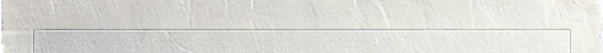
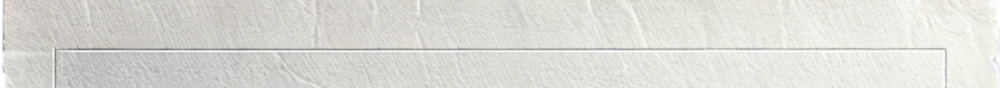

A tool for understanding
reality
 

Abstract
This thesis explores the concept of mapping as a means of reflecting human efforts to comprehend and structure the world, emphasizing its significance in shaping our perception of reality and memory. Mapping is presented as both a cognitive and creative process.
While cartography plays a fundamental role in how we navigate and make sense of our surroundings, mapping also involves the organization, interpretation, and understanding of experiences, memory, and space.
The power of maps becomes apparent when looking at visual representations of the world, whether digital or analog. However, alternative methodologies of mapping allow us to escape constructed realities challenging conventional notions of spatial perception.
Introduction
Looking through my work from the past four years, I notice a slow but steady evolution in my approach—a growing understanding of what I once thought was impossible to explain: my process of thinking. I have often found myself caught between two worlds, that of a designer and that of an artist. This in-between state has shaped my perspective, making me question the necessity of verbalizing what I see and create.
My interest in mapping is not something I consciously chose; rather, it is something that has always been present, woven into my way of understanding the world. To explore this, I find it essential to trace it back in time, both to my early life and my journey within design. Through my graphic design studies, I have gained tools to articulate ideas, but while reflecting on my work I repeatedly encounter a pattern—a subconscious obsession with making associations, categorizing, and structuring my surroundings. Perhaps this stems from a fear of chaos or a response to past criticism, but regardless of the reason, it has led me toward a deep affinity for visual arts and design.
No matter what I look at, my mind begins mapping connections. My thought process is an ongoing navigation through references, ideas, and images. This way of thinking is not new to me. As a child, I would play a game with my grandmother, searching for faces and shapes in the patterns of floor tiles, narrating the figures we imagined. Without realizing it, this simple game trained my visual memory, sharpening my ability to find meaning in abstract forms. In many ways, this early habit mirrored the essence of mapping—assigning meaning, navigating through fragmented visuals, and constructing an understanding of the world.
But mapping is not just a personal exercise, it is a fundamental human behavior. We map our surroundings, our experiences, and even our identities. Mapping is an attempt to make sense of reality, yet reality itself is a relative concept—one that is shaped by our positionality, perceptions, and biases. No map is neutral. Every representation of space, whether physical or digital, is an abstraction, a selective interpretation shaped by those who create it.
This raises interesting questions: How do we engage in this essential habit while navigating a reality that is inherently constructed? What happens when those assigned to create meaning—whether through physical maps or digital platforms—impose their beliefs; and how does this influence our collective memory and understanding of place?
This thesis aims to examine how mapping functions as a method of control, and a way of preserving memory and knowledge. By analyzing different forms of mapping, I aim to demonstrate how it shapes our perception of the world—revealing both its limitations and its power.
Chapter I
The Circular Paradigm
The world was nothing but one large unknown territory until we discovered the means to draw its terrain.
The act of mapping reflects our human need to categorize, interpret, and communicate information, becoming an exercise of control—an attempt to impose structure on an otherwise chaotic reality. It is ingrained in human nature to seek order, make connections, and share meaning.
I think the first step in this exploration is to define the term map etymologically. Understanding its meaning will provide a foundation for examining mapping as a broader conceptual, and creative act.
The word map derives from the Latin mappa, meaning a napkin or a cloth.Alfred Hiatt, Maps, in The Encyclopedia of Medieval Literature in Britain, ed. Sian Echard Wiley-Blackwell, 2017, p.2. I believe this could suggest that map-making started somehow as a commodity that could come in handy to anybody happening to have something to write on. It emphasizes the subjectivity aspect of such a practice.
By the 9th century, the term mappa mundi could be used to describe a representation of the known world, either pictorial or verbal text. The term’s evolution stems from late antique surveyors who recorded their designs on cloth.Alfred Hiatt, Maps, in The Encyclopedia of Medieval Literature in Britain, ed. Sian Echard Wiley-Blackwell, 2017, p.2. This historical connection highlights the materiality of maps and their role in human civilization as a tool of documentation and control.
Early attempts to visually structure knowledge in the medieval period, are illustrated in manuscripts such as Macrobius’s Commentary on the Dream of Scipio and the diagrams in Isidore of Seville’s De Natura Rerum.Ambrosius Theodosius Macrobius, Commentary on the Dream of Scipio, translated by William Harris Stahl, New York: Columbia University Press, 1952; Isidore of Seville, De Natura Rerum, edited by Jacque Fontaine, Paris: Les Belles Lettres, 1960.
Macrobius’s Commentary on the Dream of Scipio presents a cosmological vision that blends philosophy with cartographic representation. He divides the world into five climatic zones, only two of which are habitable, emphasizing a structured and hierarchical understanding of space [Figs. 1, 2]. This approach to mapping reflects the way dreams and celestial journeys offer insight into higher knowledge, as well as the positionality of its creator in space and time. By depicting both the physical world and the dream realm, Macrobius’s map suggests that understanding reality requires navigating both the seen and the unseen, a concept that resonates with the subjective nature of mapping itself.
This diagram depicts the five “circles of the world”, arranged like the petals of a flower (Stevens 1980, p. 274). The five circles set around a smaller circle represent the different climatic zones of the Earth: the northern- and southernmost circles as well as the middle circle are denoted as inhabitable, while the second and fourth circles are the habitable zones.
The diagrams in Isidore of Seville’s De Natura Rerum (On the nature of things) reflect a schematic rather than a geographic representation of space, dividing the world into three parts: Asia, Europe, and Africa. It combined the study of time with cosmography and meteorology to provide a general overview of the natural world. Through his work, Isidore demonstrated how mapping was as much about shaping perception as it was about depicting reality [Fig. 3]. The fact that medieval diagrams were infused with Christian symbols shows that while they were based on classical models, they were also changed to fit a new Christian view of the world [Fig. 4].
The shape of a cross is added to the middle circle, an example of introducing Christian iconography to diagrams. The number of arcs dividing the circle are increased (to 12 total) to form a star- or sun-like pattern.
All diagrams illustrated in the manuscripts, although two centuries
apart,Macrobius’s Commentary on the Dream of Scopio was originally written in the early 5th
century, around 400CE., while Isidore of Seville’s de Natura Rerum was originally written
in the early 7th century, around 620 CE.
have something in common when it comes to depicting knowledge
about the universe: circularity. In fact, De Natura Rerum was often
called Liber rotarum after its distinctive rotae, the circular shape of
the diagrams.Putting the Pieces Back Together: Isidore and De Natura Rerum, in Isidore of Seville and
His Reception in the Early Middle Ages, Cambridge University Press, 2020.
Perhaps this could be explained by Greek philosophers’
theoriesAristotle, On the Heavens, translated by Jonathan Barnes, Oxford: Clarendon Press, 1998.
Aristotle believed the Earth was round based on several key observations. He noted that
during a lunar eclipse, the Earth casts a circular shadow on the Moon, indicating a spherical
shape. He also observed that different Stars are visible in different regions of the Earth,
suggesting curvature. He also pointed out that ships dissapear from the view hull as they
sail away, which supports the idea of a curved surface. Philosophically, Aristotle considered
the sphere to be the most perfect shape, reinforcing his beliefs in a round Earth.
or even the Mesopotamian flat earth beliefs,Flat Earth, Wikipedia, last modified February 22, 2025. The world was portrayed as a disk
floating in the ocean.
but my interpretation is that this is the proof that knowledge is circular. It
is what makes our existence meaningful, with Earth as our common ground.
Mapping the world is what makes us humans. What goes around comes
around. We all have the same natural instinct of trying to fill the gaps
in our understanding of the world.
Looking at all these examples we can speculate that humans are somehow self-centered. Every collective knowledge or memory is centered around its creators. I think there is nothing actually objective in this world since the theoretical one was created.
Maps, in this sense, are visual aids that are not just neutral depictions of space but deliberate interpretations of reality, influenced by the intentions, biases, and limitations of their creators, leading to countless interpretations of the same reality.
Chapter II
Navigating Perspectives
The analogy between a map and a piece of paper reveals the inherent limitations of maps in representing the world. A map, being a projection, can never fully replicate the physical world. It is impossible for a flat sheet of paper to accurately rest on a globe, and therefore, no map can ever be 100% accurate. Maps are not neutral; they are projections, which in themselves are not natural or given. They are always influenced by the perspectives and priorities of the mapmakers.Hans Ulrich Obrist, Mapping It Out: An Alternative Atlas of Contemporary Cartographies, Cambridge: MIT Press, 2014.
This issue of perspective is central to mapping. The Ambassadors, by
Hans Holbein [Figs. 6, 7], explores perspective and the hereditary
distortion in representing reality. In his famous painting, two
statesmen stand surrounded by cartographic tools, globes, a quadrant,
and so on, emphasizing the importance of perspective and the objects
that define how we understand the world. The space between the two men,
on the carpet, is an anamorphicThe Editors of Encyclopaedia Britannica, anamorphosis,
Encyclopedia Britannica, May 12, 2023.
Anamorphosis, in the visual arts, is an ingenious perspective technique that gives a distorted
image of the subject, represented in a picture, when seen from the usual viewpoint,
but so executed that if viewed from a particular angle, or reflected in a curved mirror, the
distortion disappears, and the image in the picture appears normal.
zone in which the entire image goes all
wrong. When viewers move around the painting to the side, this zone
transforms into the image of a skull. Holbein challenges us to consider
the pointlessness of both wealth and status, as well as the nature of
perspective. Both are doomed to formlessness, ultimately leading to the
skull and, by extension, to death, because they do not represent the
absolute truth, since there is no such a thing in map-making.
Highlighting its significance, this painting draws attention to how
maps, as representations of space, can shape our understanding of power
structures hinting that wealth, although ephemeral, is a key element in
the production of knowledge.

How is it to follow someone else’s footsteps to this day? They can’t be always right.
The standard world map used nowadays, exists since 1569 [Fig. 8], despite its distortion of the Earth’s surface, where the size of Greenland looks bigger than Africa— which is not really accurate.Mercator Projection, Wikipedia, The Free Encyclopedia. [Fig. 9]
Widely used because, aside from navigation, it is well suited for internet web maps, the Mercator Projection isn’t wrong, it’s just fundamentally impossible to represent the surface of a sphere on a flat piece of paper without distorting something. This projection sacrifices the accurate depiction of areas between different latitudes, in order to accurately depict shapes. It allows straight lines on a flat paper, to correspond to curved lines of constant bearing on a globe. This is extremely useful for navigation because you can draw a straight line from your current position to your destination and it corresponds to the curved path you’ll take. Mercator projection allows the full space of a rectangular sheet of paper to be taken up without empty space.
Map projections are obviously meant to claim the space around, showcasing knowledge and its limitations. As professor Shannon Mattern describes, Medieval and Rennaissance map-makers were illustrating the limits of their explorations through mythical sea creatures.Shannon Mattern, How to Map Nothing, Places Journal, March 2021. Based on Aristotle’s Horror vacui theory, which states that nature has a fear of emptiness, it was believed that space could not be empty.Shannon Mattern, How to Map Nothing, Places Journal, March 2021. [Fig. 10]


Why was it necessary to add all these drawings, instead of accepting the void? At first glance, I thought the cartographic representation would still be the same without them but these monsters served as interfaces between the known and the unknownChet van Duzer, Hic sunt dracones: The Geography and Cartography of Monsters, in Asa Simon Mittman and Peter J. Dendle, eds., The Ashgate Research Companion to Monsters and the Monstrous, Routledge, 2013: 393-4. revealing humans’ subconscious need to assign meaning to abstraction.
Shannon Mattern continues explaining that while this practice creates disorientation, it also becomes a political tool, quoting the postcolonial literary Scholar, Isabel Hofmeyr, who reminded us that the myth of the empty sea is largely the product of European imperialism, and their map-making traditions in which the sea becomes blank space across which power can be projected.Isabel Hofmeyr, Oceans as Empty Spaces? Redrafting our Knowledge by Dropping the Colonial Lens, The Conversation, September 6, 2018, in Shannon Mattern, How to Map Nothing, Places Journal, March 2021. This fear of emptiness leads me to believe that humans are conquerors by nature, so in order to construct nothingness, we have to relate it to what is already there.
If maps are not just representations of space, but also tools of power, imagination, and projection, then what happens when they are wrong? Erroneous knowledge can become embedded in collective consciousness supporting the idea that maps are as much about imagination as they are about accuracy.
Just as medieval map makers filled the unknown with mythical creatures [Fig. 11], throughout history the concept of phantom islands has been a popular error among early days cartographers. For instance, when the early Spanish explorers landed the extraordinary lenght of what we know as the Gulf of California, in the 1600s, they never made it all the way up to the connection of the top, and made the understandable assumption that California was an island.YouTube, Phantom Islands: The Lost Isles of History, uploaded by Atlas Pro, August 8, 2020. This error persisted on thousands of maps of the newly discovered continent [Figs. 12, 13], right up until the end of 18th century, because people wanted it to exist. It was named after the fictional island of California, from a popular 16th century romantic novel about an island inhabited entirely by Amazonian women.Garci Rodríguez de Montalvo, Las sergas de Esplandián, 1510. In an era where European high society was using maps for decoration rather than navigation, it made artistic, if not geographic sense to include the famous island, the well-read thing that people wanted to see. This suggests that maps were not just practical instruments but also cultural artifacts influenced by what people wanted to believe in rather than what was true.
Similarly, the mythical island of Brasil, from Irish folklore, exemplifies how legends influenced early cartography. Brasil was an island forever cloaked in mist but that could be seen just for one day every seven years. It first appeared on maps in 1325, a time when inaccuracies were seen as a reasonable hazard of cartography, and distinguishing myth from reality was a low priority.YouTube, Phantom Islands: The Lost Isles of History, uploaded by Atlas Pro, August 8, 2020. The inclusion of such fantastical places underscores how early mapmakers often intertwined imagination with exploration, further blurring the lines between the known and the unknown.
Maps reveal their dual nature as both practical tools and cultural artifacts. These inherent limitations of cartography underscore how representations of space are influenced by the perspectives and desires of their creators. From Holbei’s, The Ambassadors, which critiques the illusions of wealth and status, to the enduring myths of phantom Islands we see that maps serve not only to navigate the physical world but also to reflect and shape our collective imagination.
Chapter III
The Illusion of Objectivity within
Digital Territories
I have always enjoyed expanding my archive of visual references by exploring open sources and collecting anything I find interesting or possibly useful for my artistic practice. My curiosity, combined with the ease of accessibility, always brought me to new visual discoveries. I am particularly intrigued by exploring unfamiliar places; however, financial limitations often prevent me from traveling.
Although satellite technology might mark the death of discovery — as new areal images can be used to perfectly map almost every inch of the world— I would consider that these actually represented the birth of a new era, rather than the death of discovery — an era of accessibility. For the past few years, I’ve been collecting screenshots of my findings from the Street View option, on Google Maps, as well as images uploaded by the community members in the review section. Initially, I saw them as merely amusing, but their depiction of space slowly sparked deeper questions in my mind. I have noticed a lot of places appearing glitched, transforming supposedly familiar landscapes into distortion. It gives me the feeling that I am actually exploring a distorted imaginary map, instead of an accurate depiction of the world [Figs. 14, 15, 16, 17]
.png)
.png)
.png)
.png)
These glitches construct glimpses into fragmented worlds, where being mapped and digitally visible is a privilege in itself. Most of the images collected are from regions where access to tools like Street View can be limited. This digital divide makes me question not only how places are seen, but also who gets to be seen and remembered in our mapped world.
What I meant by who gets seen or not is about the imbalance in how the world is documented. Some areas are thoroughly mapped and constantly updated, while others are barely visible or only partially represented on global platforms. This visibility gap often reflects broader inequalities, where wealthier regions are more digitally accessible and represented than less privileged ones. Distortion isn’t just visual, but is tied to deeper issues of representation and erasure.
Maps become reflections of the societies that produce them, and they are used to organize space and, by extension, people. They are increasingly democratized through open data and platforms like Google Maps. The issue is no longer access to information but its organization. The open-source movement has transformed how we use maps. They are no longer static—they are living tools that evolve as we interact with them, unfolding new stories and perspectives. As an example, I would like to mention the Golf of Mexic, on Google Maps, which after different disputes and debates with the new government of the US, had its name changed to The Golf of America [Fig. 18]. This, deliberately or not, supports the idea that open-source maps are tools for political discourse where positionality becomes an important aspect of map making suppressing knowledge and power.
.png)
.png)
One of the few locations in North Korea where Street View is available is in a hotel lobby. Notice that the map is centered on Eastern Asia.
Communication was and is a volatile process, wherein misinterpretations cannot be entirely avoided. At the root of miscommunication lies the assumption that people will understand us because we use ‚universal’ or ‚objective’ communication.Ruben Pater, The Politics of Design: A (Not So) Global Manual for Visual Communication, Amsterdam: BIS Publishers, 2016, p.3.
Being used to a Western cartographic representation, with Europe depicted as the center of the world does not mean that this should be considered as the absolute truth. This urge for standardization of maps is, therefore, particularly evident in modern digital mapping technologies, where algorithms shape our perception of space and reality. Chinese maps [Fig. 19], for instance, like those of the Ming Dynasty, show a world centered on China, with accurate proportions of the surroundings.A Brief History of Cartography: Famous World Maps and Anecdotes, Wallango, June 19 2024. This way a map’s decipherability can suggest a particular way of discovering and understanding positionality. [Fig. 20]
Conventional maps, charts, and diagrams, while claiming objectivity, are always influenced by the agendas of their creators and users. Cartography can be endlessly altered to reflect different priorities, hierarchies, and points of view.
Chapter IV
Cartography of Memory
Everything that was directly lived has moved away into representation.Lefebvre, Henri, The Production of Space,translated by Donald Nicholson-Smith, Oxford: Blackwell, 1991, originally published 1974.
Maps are always an abstraction of the physical or conceptual world while also representing a symbolic depiction of a space or ideas. This allows one to understand and navigate more or less unfamiliar places or experiences.
Just as maps help us navigate physical space, memory allows us to navigate personal and collective histories. Our minds create internal maps of places we’ve been, overlaying them with emotions, events, and sensory details.NeuroLaunch, Mental Map Psychology: Navigating Our Cognitive World, NeuroLaunch. Memory, in its essence, involves forgetting. Mapping serves as a way to preserve memory—an attempt to trace what exists so that it won’t fade away.
The Situationist movement resonates with this exploration because it
uses maps to express personal, subjective realities of urban spaces
while challenging traditional notions of mapping and place. Their
approach to culture and art was influenced by this attitude of revolt
toward collective knowledge, of space, and the study of the
subconscious. It was also influenced by the Surrealist movement of the
early 20th century [Fig. 21], which pushed the bounds of art by
examining the illogical and unconscious components of human experience.
The Situationist movement had its emphasis on psychogeography and the
emotional experience of space.The Situationists and Mapping the City, Rethinking The Future.
[Fig. 22]
This map of the world rescales
countries' sizes based on their
importance to the overall Surrealist
movement.
This exercise follows the thread of a
child in a playground. The purpose of
this study was to map the patterns
and movements of the child in an
environment that was suited to his
scale.
The concept of psychogeographical maps refers to the study of how urban and physical environments affect human behavior, feelings, and experiences. This name combines the physical and social features of locations, with a psycho, referring to the mind. The aim is to see the city in a fresh, unfiltered way, free from the limitations of maps, routines, and predetermined paths. According to this theory, what may appear random is a subconscious response to how the city’s infrastructure and politics impact our lives.The Situationists and Mapping the City, Rethinking The Future
Guy Debord described psychogeography as; the study of the precise laws and specific effects of the geographical environment, consciously organized or not, on the emotions and behavior of individuals.Guy Debord, Introduction to a Critique of Urban Geography, translated by Ken Knabb, Bureau of Public Secrets, 1955.
This eventually connects to perceiving the city as not a collection of utilitarian spaces, but a labyrinth of experiences filled with hidden meanings and discoveries. The same spaces might reveal themselves differently for different people inhabiting them, adding to the multi-layered and multi-sensorial nature of space.
Separation is itself part of the unity of the world, of the global social praxis split up into reality and image. The social practice that the autonomous spectacle confronts is also the real totality mutilated to the point of making the spectacle appear as its goal. The language of the spectacle consists of signs of the ruling production, which at the same time are the ultimate goal of this production.Guy Debord, The Society of the Spectacle, translated by Donald Nicholson-Smith, New York: Zone Books, 1994, p.6.
The spectacle isn’t just a distraction but an integral part of how society functions — separating reality and image while making that separation seem like the goal itself. Debord’s concept of the spectacle describes how signage in urban spaces becomes ornamental, detached from its original function, and part of a larger system of mediated perception. Images function as maps that dissolve into mere representations —abstractions of the world. However, this abstraction is subjective. For the creator, the image retains meaning, but for others, it exists as a detached interpretation. We become attached to the meanings we assign to things because they help us make sense of the world. Yet, in doing so, we experience a form of alienation — our reality is not fixed but continuously shaped by individual perceptions.
...this reciprocal alienation is the essence and the support of the existing societyGuy Debord, The Society of the Spectacle, translated by Donald Nicholson-Smith, New York: Zone Books, 1994, p.6.
This rather artistic movement or reinterpretation of traditional cartography allows a more personal, non-literal exploration of space. It challenges the expectations we have of maps, encouraging us to think of them not only as tools for navigation, but as complex, multifaceted representations of memory, identity, and emotions.
Chapter V
Recontextualizing Reality
As Nicholas Mirzoeff explains, the way we see the world is deeply intertwined with reality and what we have accessible around us. Everything that is, in any way, possible to describe, label, or categorize is connected to society. No matter where we go, we carry our pre-constructed reality with us, analyzing everything through that lens.Nicholas Mirzoeff, How to See the World, London: Penguin Books, 2015.
It’s like a visual regime that regulates what we see, and ironically, the regime is constructed by us. Visuality is at the very center of struggles for social justice, at moments of both domination and resistance. It highlights that how we see and understand the world through images, symbols, and visual culture can influence both oppression and resistance. In moments of domination, visuals can be used to control narratives and reinforce power structures. Conversely, during resistance, visuality can be a powerful tool for mobilization, raising awareness, and challenging dominant narratives. Essentially, visuality is a key element in the dynamics of power, shaping how social justice issues are understood and addressed.
There are many examples of recontextualization of meaning, especially in mapping, such as Batia Suter’s book entitled Parallel Encyclopedia.Batia Suter, Parallel Encyclopedia, Zurich: JRP|Ringier, 2014. Images acquire new significance and emotional resonance when presented in novel juxtapositions. They are recontextualized to a point that they gain new meaning assuming new associative values. I think it is very interesting to browse this book and analyze what goes on in someone’s brain. My first instinct is to try to find connections between the images although they are organized in a rather unusual manner. [ Figs. 23 ]
All of this culminates in a fear of nothingness — the fear of being unable to explain what surrounds us, which leaves us feeling powerless. To break from the world means to take a break from trying to constantly update and progress our meaning of reality.
Conclusion
Mapping is far more than a technical exercise—it is a deeply human activity, reflecting our desires, biases, and limitations. Whether in traditional cartography, digital navigation, or abstract conceptual diagrams, maps shape our understanding of the world, reinforcing existing structures or challenging conventional perspectives.
By recognizing the inherent subjectivity of mapping, we gain a deeper awareness of how reality itself is constructed, mediated, and contested.
In an instant, map-making—far from fixing reality—becomes a wild proliferation of alternative ones, of possible worlds, each as faulty and fantastic as the next. And yet, explicitly or not, all maps carry a certain claim: that this one is somehow truer than the others.
Nonetheless, after presenting all these different approaches, it becomes easier to state that there are countless ways of perceiving and representing the world.
Mapping, at its core, is image-making. This becomes intertwined with my practice as a graphic designer, and because of this, I take part directly in the production of knowledge. A designer has to be in charge of the viewer's mind and always make informed design choices. The information represented visually influences others, dictating what the focus should be on, and what should remain unseen. My goal was not to dismiss the credibility of what maps mean and transmit, but to invite people to question what they see and, to raise a kind of awareness that helps us to not take everything for granted.
web guidance :
Thomas Buxo & François Girard-Meunier
thesis guidance :
Füsun Türetken
special thanks to :
Jakob Wilke & Ștefan Jiroveanu
♥ ♥ ♥ ♥ ♥ ♥ ♥ ♥